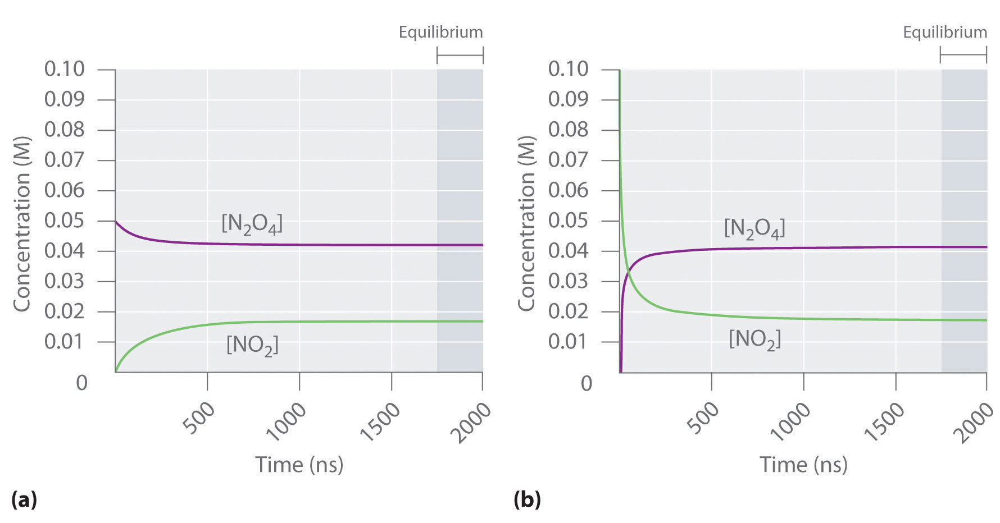
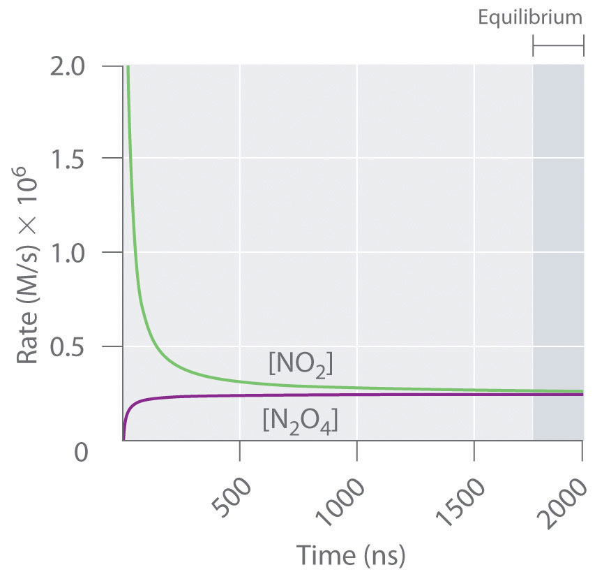

Chemical equilibrium is a dynamic process that consists of a forward reaction, in which reactants are converted to products, and a reverse reaction, in which products are converted to reactants. At equilibrium, the forward and reverse reactions proceed at equal rates. Consider, for example, a simple system that contains only one reactant and one product, the reversible dissociation of dinitrogen tetroxide (N2O4) to nitrogen dioxide (NO2). You may recall from Chapter 14 "Chemical Kinetics" that NO2 is responsible for the brown color we associate with smog. When a sealed tube containing solid N2O4 (mp = −9.3°C; bp = 21.2°C) is heated from −78.4°C to 25°C, the red-brown color of NO2 appears (Figure 15.1 "The "). The reaction can be followed visually because the product (NO2) is colored, whereas the reactant (N2O4) is colorless:
Equation 15.1
The double arrow indicates that both the forward and reverse reactions are occurring simultaneously; it is read “is in equilibrium with.”
Figure 15.1 The System at Different Temperatures

(left) At dry ice temperature (−78.4°C), the system contains essentially pure solid N2O4, which is colorless. (center) As the system is warmed above the melting point of N2O4 (−9.3°C), the N2O4 melts and then evaporates, and some of the vapor dissociates to red-brown NO2. (right) Eventually the sample reaches room temperature, and a mixture of gaseous N2O4 and NO2 is present. The composition of the mixture and hence the color do not change further with time: the system has reached equilibrium at the new temperature.
Figure 15.2 "The Composition of N" shows how the composition of this system would vary as a function of time at a constant temperature. If the initial concentration of NO2 were zero, then it increases as the concentration of N2O4 decreases. Eventually the composition of the system stops changing with time, and chemical equilibrium is achieved. Conversely, if we start with a sample that contains no N2O4 but an initial NO2 concentration twice the initial concentration of N2O4 in part (a) in Figure 15.2 "The Composition of N", in accordance with the stoichiometry of the reaction, we reach exactly the same equilibrium composition, as shown in part (b) in Figure 15.2 "The Composition of N". Thus equilibrium can be approached from either direction in a chemical reaction.
Figure 15.2 The Composition of N2O4/NO2 Mixtures as a Function of Time at Room Temperature
(a) Initially, this idealized system contains 0.0500 M gaseous N2O4 and no gaseous NO2. The concentration of N2O4 decreases with time as the concentration of NO2 increases. (b) Initially, this system contains 0.1000 M NO2 and no N2O4. The concentration of NO2 decreases with time as the concentration of N2O4 increases. In both cases, the final concentrations of the substances are the same: [N2O4] = 0.0422 M and [NO2] = 0.0156 M at equilibrium.
Figure 15.3 "The Forward and Reverse Reaction Rates as a Function of Time for the " shows the forward and reverse reaction rates for a sample that initially contains pure NO2. Because the initial concentration of N2O4 is zero, the forward reaction rate (dissociation of N2O4) is initially zero as well. In contrast, the reverse reaction rate (dimerization of NO2) is initially very high (2.0 × 106 M/s), but it decreases rapidly as the concentration of NO2 decreases. (Recall from Chapter 14 "Chemical Kinetics" that the reaction rate of the dimerization reaction is expected to decrease rapidly because the reaction is second order in NO2: rate = kr[NO2]2, where kr is the rate constant for the reverse reaction shown in Equation 15.1.) As the concentration of N2O4 increases, the rate of dissociation of N2O4 increases—but more slowly than the dimerization of NO2—because the reaction is only first order in N2O4 (rate = kf[N2O4], where kf is the rate constant for the forward reaction in Equation 15.1). Eventually, the forward and reverse reaction rates become identical, kF = kr, and the system has reached chemical equilibrium. If the forward and reverse reactions occur at different rates, then the system is not at equilibrium.
Figure 15.3 The Forward and Reverse Reaction Rates as a Function of Time for the System Shown in Part (b) in Figure 15.2 "The Composition of N"
The rate of dimerization of NO2 (reverse reaction) decreases rapidly with time, as expected for a second-order reaction. Because the initial concentration of N2O4 is zero, the rate of the dissociation reaction (forward reaction) at t = 0 is also zero. As the dimerization reaction proceeds, the N2O4 concentration increases, and its rate of dissociation also increases. Eventually the rates of the two reactions are equal: chemical equilibrium has been reached, and the concentrations of N2O4 and NO2 no longer change.
At equilibrium, the forward reaction rate is equal to the reverse reaction rate.
The three reaction systems (1, 2, and 3) depicted in the accompanying illustration can all be described by the equation where the blue circles are A and the purple ovals are B. Each set of panels shows the changing composition of one of the three reaction mixtures as a function of time. Which system took the longest to reach chemical equilibrium?
Given: three reaction systems
Asked for: relative time to reach chemical equilibrium
Strategy:
Compare the concentrations of A and B at different times. The system whose composition takes the longest to stabilize took the longest to reach chemical equilibrium.
Solution:
In systems 1 and 3, the concentration of A decreases from t0 through t2 but is the same at both t2 and t3. Thus systems 1 and 3 are at equilibrium by t3. In system 2, the concentrations of A and B are still changing between t2 and t3, so system 2 may not yet have reached equilibrium by t3. Thus system 2 took the longest to reach chemical equilibrium.
Exercise
In the following illustration, A is represented by blue circles, B by purple squares, and C by orange ovals; the equation for the reaction is A + B ⇌ C. The sets of panels represent the compositions of three reaction mixtures as a function of time. Which, if any, of the systems shown has reached equilibrium?
Answer: system 2
Chemical equilibrium is a dynamic process consisting of forward and reverse reactions that proceed at equal rates. At equilibrium, the composition of the system no longer changes with time. The composition of an equilibrium mixture is independent of the direction from which equilibrium is approached.
What is meant when a reaction is described as “having reached equilibrium”? What does this statement mean regarding the forward and reverse reaction rates? What does this statement mean regarding the concentrations or amounts of the reactants and the products?
Is it correct to say that the reaction has “stopped” when it has reached equilibrium? Explain your answer and support it with a specific example.
Why is chemical equilibrium described as a dynamic process? Describe this process in the context of a saturated solution of NaCl in water. What is occurring on a microscopic level? What is happening on a macroscopic level?
Which of these systems exists in a state of chemical equilibrium?
Both forward and reverse reactions occur but at the same rate. Na+ and Cl− ions continuously leave the surface of an NaCl crystal to enter solution, while at the same time Na+ and Cl− ions in solution precipitate on the surface of the crystal.